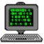
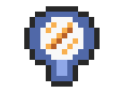
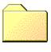

Buddy List
Buddy Pond
 Console
Login
Profile
 Mirror
SoundCloud
Inter Dimensional Cable
Music Television
 Games
Pause Wallpaper
Welcome - You look nice today!
Login
Logout
Buddy Pond
Source Code
Client SDK
Home Page
0
Users Connected
Disconnected
Conection Started:
Packets Sent
Packets Recieved
Last Response Time:
33ms
Average Response Time:
33ms
Select music playlist...
Buddy House 1 ( 10 Tracks )
Buddy House 0 ( 33 Tracks )
Andrew Potthast: Morning Set
Featured Indie Producer: Andrew Potthast
Chat with X
Chat with X